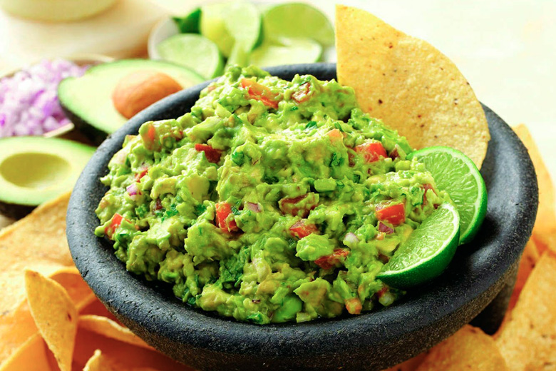

Preparing this Mexican dish is a delicate matter, because there is no single recipe. After comparing several different resources, I believe I found a simple and authentic way of preparing homemamde guacamole.
As you will see, the base recipe is very simple and versatile, giving you the freedom to add any and as many variations as you like.
Now let's cook!
Ingredients list:
- 3 avocados
- 1 handful of fresh cilantro
- 1 green onion
- lime juice to taste
- 1 medium sized tomato (optional)
- jalapeño pepper (optional)
- red tabasco (optional)
- 1 garlic close (optional)
Steps:
- Finely chop the onion and cilantro, as well as the garlic and/or jalapeño peppers if you would like to add them.
- Slice your avocados in half and remove the pulp with the help of a spoon.
- Chop the avocado pulp into smaller pieces and put it into a bowl or mortar along with the rest of your chopped ingredients and the lime juice.
- Mash the avocado with the aid of a fork or pestle, mixing it with the other ingredients, making sure to maintain an irregular texture.
- Add any of the other optional ingredients such as tomato or tabasco by gently mixing the in with a circular motion, as to not alter the overall texture.
- Now taste your guacamole and make any adjustments needed, such as adding more lime juice or salt.
- Your guacamole is ready to be served. You can accompany it with a side of nachos, pico de gallo, fajitas or even humble crackers.
Guacamole is best enjoyed fresh, but it can last in the fridge for up to 48 hours or it can even be frozen for 2-3 months.
If you decide to store it in the fridge, use a well closing container, make sure to add a bit more lime juice and cover the top with plastic wrap to reduce the exposure to air. This way you will prevent the avocado from turning brown too quickly.
If you decided to freeze some of your guacamole, thaw it overnight in the fridge and consume within the next day.